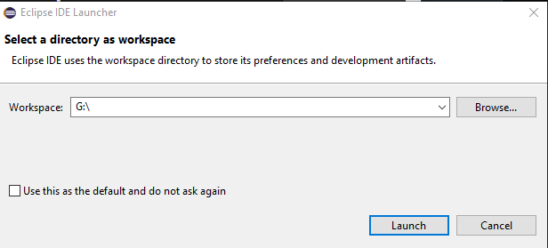
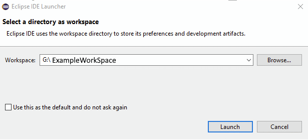

Work spaces in eclipse
A work space is where you save all the projects you can also install features to your work space. work spaces are independant from each other and you can create multiple work spaces projects in a different work space will have to be imported to any new ones created changes also made will not carry over from previous work spaces.
Creating the work space
Creating a workspace is very simple The first thing that you will have to do is select the directory that you want the worksapce to be saved in do this by selecting the file that use want to use then press launch this will then open eclipse using the workspace that you created.

